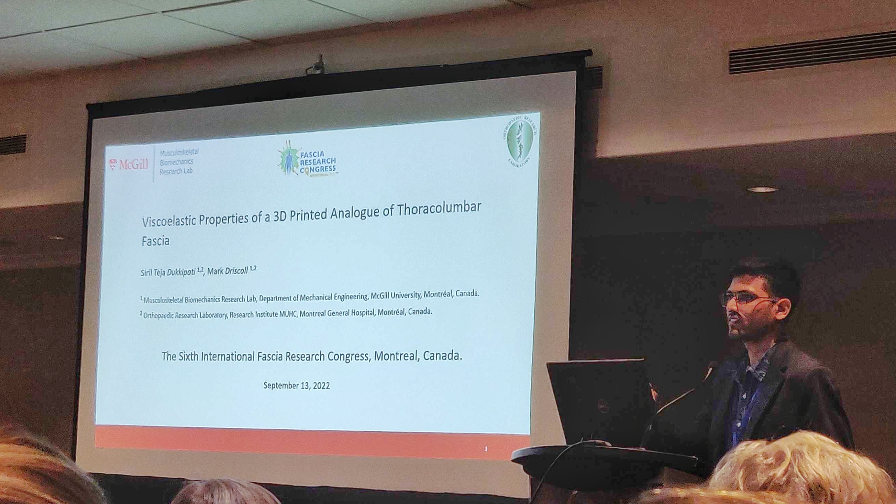

Siril Teja Dukkipati
PhD candidate at MBR Lab, McGill University, Montreal, Canada.

siril.dukkipati@mail.mcgill.ca
sirilteja.dukkipati@gmail.com
Welcome.! I am a PhD candidate at the Musculoskeletal Biomechanics Research Lab headed by Dr. Mark Driscoll in the Department of Mechanical Engineering at McGill. My work mainly focuses on the Biomechanics of Human Spine and it’s modeling. As the name suggests, my lab works in various fields ranging from FE Simulations to Benchtop model design to Virtual surgery planning - all revolving around the human spine, it’s stability and various medical conditions related to it.
My research interests include Robot design, Control, Experimental validation. My PhD work is focused on developing a validated robotic benchtop spinal model for use as a research tool in low back research. I also do some web dev and delve in cybersecurity topics.
I hold a Bachelor’s Degree in Mechanical Engineering from Manipal University, India and did my bachelor’s thesis with the R&MM Research Group at Vrije Universiteit Brussel, Belgium.
I was also a part of Mars Society South Asia and worked on promoting space exploration and education in the 7 South Asian countries by organizing robotic competitions like IRC, IRDC etc.
In my free time, I enjoy doing photography. I love cycling and go on long biking trips during summers.
news
| Sep 13, 2022 |
Another podium presentation on “Viscoelastic properties of 3D printed thoracolumbar fascia” at the Fascia Research Congress 2022, Montreal, Canada
 |
|---|---|
| Jul 4, 2022 | Gave a podium presentation titles “Design and validation of 3D printed analogous lumbar model for use in a robotic benchtop spine model” at ESMC 2022, Galway, Ireland. |
| Jun 2, 2022 | Funding secured - Fonds de recherche du Québec - Nature et Technologies (FRQ-NT Masters research Scholarship 2022). |
| May 1, 2022 | Selected for Another podium talk.! This time at the Fascia Research Congress 2022. - “Viscoelastic properties of 3D printed thoracolumbar fascia”. |
| Apr 10, 2022 | Our work titled “Design and validation of 3D printed analogous lumbar model for use in a robotic benchtop spine model” is selected for a podium presentation at ESMC 2022, Galway, Ireland. |
| Mar 20, 2022 | Abstract submitted to 6th International Fascia Research Congress |
| Feb 7, 2022 | Abstract submitted to NASS 37th Annual Meeting |